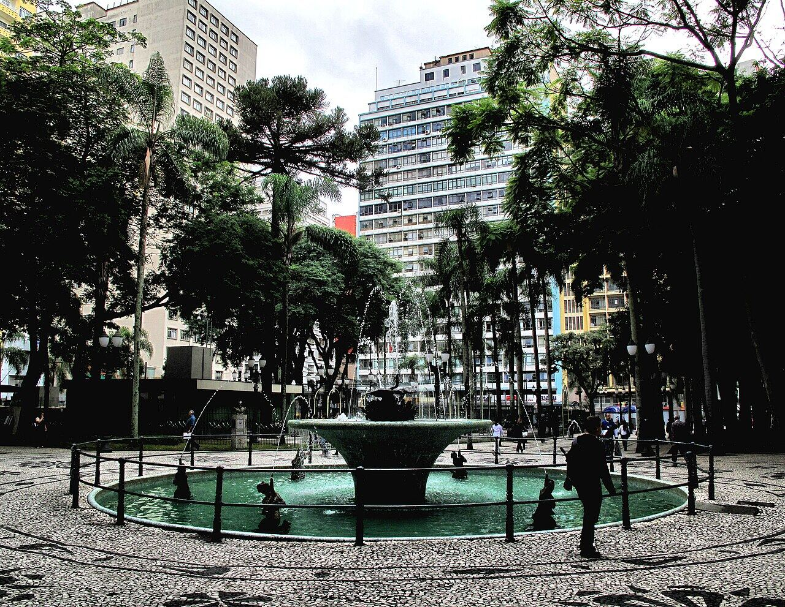
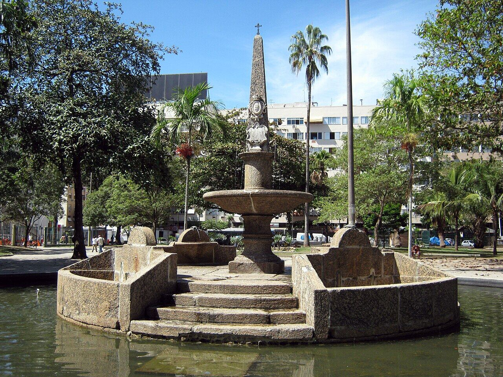
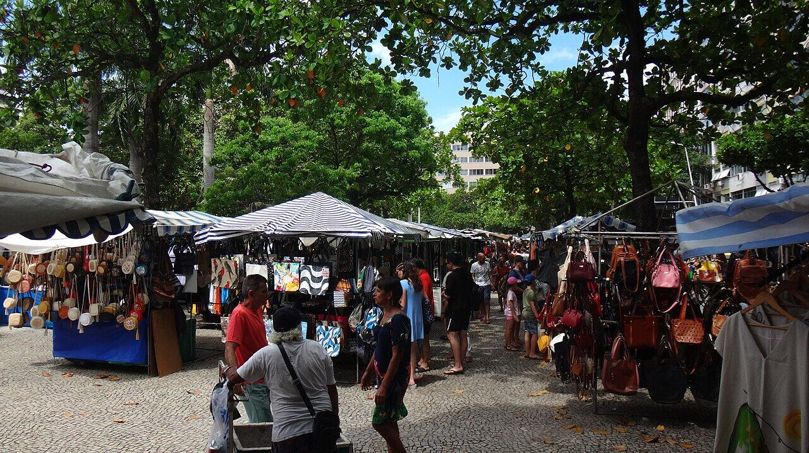

Feira Hippie de Ipanema
Ipanema
Artesanato aos domingos, depois uma caminhada até o Arpoador.
Nosso comentário
Na Praça General Osório, a feira reúne artesanato, roupas, quadros e couro desde o fim dos anos 1960. Depois, uma caminhada de poucos quarteirões leva até a praia e ao Arpoador.
Dicas
- Só aos domingos.
- Combinem com o pôr do sol no Arpoador.
Combina com
- Pôr do sol no Arpoador de noite
- Astor de noite
Fotos do lugar


